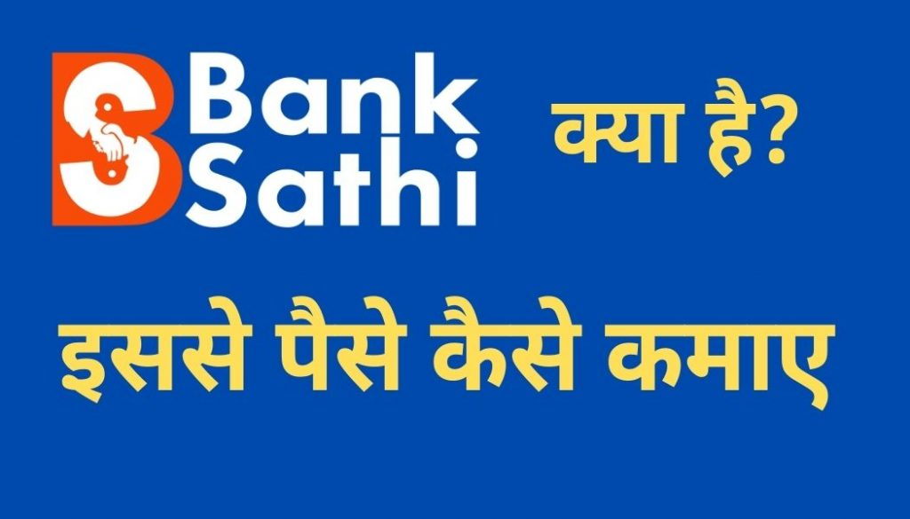

नमस्कार दोस्तों आज मैं आपको बैंकसाथी एप्लीकेशन के बारे में बताना चाहता हूं, अगर आप बैंकिंग से जुड़े कोई भी फाइनेंसियल सर्विसेज से जुड़ना चाहते हैं, आप चाहते हैं कि आप अपने दोस्तों या रिश्तेदारों कोक्रेडिट कार्ड या लोन वगैरह दिला कर कुछ कमीशन कमा पाए।
पार्ट टाइम इनकम कर सके, यानी कि आप बड़ी ही आसानी से किसी भी तरह का फाइनेंशियल सर्विसेज अपने दोस्तों रिश्तेदारों में दिलवा कर महीने का 20 से ₹30000 आसानी से कमा सकते हैं।
मैं आपको बताऊंगा कि आप इस बैंक साथी एप्लीकेशन से क्या-क्या कर सकते हैं, और किस तरीके से बड़ी ही आसानी तरीके से कमाई कर पाएंगे। बैंकिंग और फाइनेंशियल सर्विसेज प्रोवाइडर करके।
यह आपका खुद का बिजनेस होगा (Start Your Own Business)
कहने का मतलब यह है की बैंक साथी एप्लीकेशन से जुड़ना मतलब खुद का एक बिजनेस शुरू करने जैसा है। बिजनेस इसको इसीलिए बोल रहे हैं क्योंकि आप जितना ज्यादा फाइनेंशियल सर्विसेज अपने दोस्तों या रिश्तेदारों के साथ बेचेंगे उतना ज्यादा कमीशन आपको मिलने वाला है।
यानी कि जिस तरह किसी बिजनेस को जितने अच्छे तरीके से चलाएंगे उतना ज्यादा फायदा होता है उसी तरह इसे भी एक बिजनेस समझ कर अगर आप काम करेंगे तो आसानी से ₹20000 से ₹30000 तक प्रति महीने कमाई कर सकते हैं।
{kind=link}

इन्वेस्टमेंट कितना होगा ?(How Much Invest)
इन्वेस्टमेंट की बात करें तो इसमें कोई पैसा आपको इन्वेस्ट करने की जरूरत नहीं है, यह एक जीरो इन्वेस्टमेंट बिजनेस है, इसमें आपको सिर्फ बैंक साथी एप्लीकेशन को इंस्टॉल करके इसमें आपको रजिस्ट्रेशन करना है और अपना काम स्टार्ट कर देना है जितना ज्यादा आप काम करेंगे। उसी हिसाब से आपका कमीशन बनेगा।
इसमें किसी भी तरह का कोई पैकेज, या कोई भी प्रीमियम सर्विस नहीं दिया जाता है यह एप्लीकेशन बिल्कुल फ्री है और हंड्रेड परसेंट जेन्युइन है। आपको एक भी पैसा नहीं देना है और बैंक साथी एप्लीकेशन से जुड़ जाना है।
बैंक साथी एप्लीकेशन पर कौन-कौन से काम कर सकते हैं?(Product Available on Banksathi Application )
- सबसे पहले इंपॉर्टेंट काम आप खुद एक लोन डीएसए (Loan DSA) लोन एजेंट बन के काम कर सकते हैं। मतलब अपने दोस्तों रिश्तेदारों में जिनको पर्सनल लोन, होम लोन, क्रेडिट कार्ड इन सब चीजों की जरूरत होगी उन्हें यह सभी सर्विसेज बैंक साथी एप्लीकेशन के माध्यम से दिलाकर आप कमीशन कमा सकते हैं।
Loan Agent (DSA) kaise bane? - बैंक साथी एप्लीकेशन काफी सारे एनबीएफसी बैंक के साथ कोलैबोरेट किया हुआ है तो आप बहुत सारे बैंक के सर्विसेज बेचकर बैंक साथी एप्लीकेशन से पैसे कमा सकते हैं।
- बैंक साथी एप्लीकेशन से आप जीरो बैलेंस सेविंग अकाउंट खुलवा सकते हैं और कमीशन पा सकते हैं। अभी कुछ बैंक का जैसे कोटक बैंक का इंडस बैंक का अगर सेविंग अकाउंट खुलवाते हैं, तो अच्छा खासा कमीशन मिल सकता है।
- बजाज ईएमआई कार्ड बैंक साथी एप्लीकेशन की मदद से ऑनलाइन कस्टमर को दिलवा सकते हैं।
- अगर किसी को क्रेडिट कार्ड चाहिए तो आप क्रेडिट कार्ड भी दिलवा सकते हैं।
- अगर किसी का डीमेट अकाउंट ओपन करना है तो आप इस एप्लीकेशन की मदद से डीमेट अकाउंट भी ओपन कर सकते हैं।
बैंक साथी एप्लीकेशन पर काम कैसे करना है?(How To Work On Bank Sathi )
- सबसे पहले आप बैंक साथ ही एप्लीकेशन को इंस्टॉल करेंगे।
- उसके अंदर आपको एडवाइजर बनना है।
- फिर आपको अपना लीड सबमिट करना है, अपने यार दोस्तों को आप रेफर भी कर सकते हैं।
- जब आप की लीड कन्वर्ट हो जाएगी यानी कि आप जिसको कोई सर्विस रेफर करेंगे और आपके रेफर से कोई भी बंदा किसी भी सर्विस को परचेज करता है तो आपको कमीशन मिल जाता है, कमीशन आपको हर महीने के 15 तारीख को मिल जाता है।
- कई बार आपके ऊपर से सर्विस पर चेंज हो जाती है लेकिन आपके डैशबोर्ड में नहीं दिखती है तो आपको परेशान होने की जरूरत नहीं है आपको 15 तारीख तक का वेट करना है क्योंकि हर महीने के 15 तारीख को पेमेंट रिलीज होता है।
- इसमें आप रेफर एंड अर्न कर के भी पैसे कमा सकते हैं जैसे आप अपने फ्रेंड को बैंक साथी एप्लीकेशन यूज करने के लिए बोलते हैं तो आपके फ्रेंड ने जो भी सर्विस भेजा है और उसका जो भी कमीशन आपकी फ्रेंड को मिलेगा उसका 10 परसेंट कमीशन आपको मिलेगा।
बैंक साथी एप्लीकेशन कैसे यूज करना है?(How To use Bank Sathi )
- आपको बैंक साथी एप्लीकेशन इंस्टॉल करके उसमें लॉगिन हो जाना है लॉगइन होने के बाद आपको आपका डैशबोर्ड दिख जाएगा।( Install banksathi application on playstore)
- पहले पेज पर आपको सारे के सारे ऑप्शन जैसे रेफर, सेविंग अकाउंट, डिमैट अकाउंट, क्रेडिट कार्ड यह सारे सर्विसेज आपको पहले पेज पर दिख जाएंगे।
- पहले पेज पर आपको ऐड लीड का एक ऑप्शन मिलेगा उस पर जैसे ही क्लिक करेंगे आपके सामने एक नया प्रॉपर आ जाएगा यहां आपको उस सर्विस को चूज करना है जो आप अपने कस्टमर को देना चाहते हैं जैसे अगर आप सेविंग अकाउंट खोलना चाहते हैं तो सेविंग अकाउंट कोशिश कीजिए डिमैट अकाउंट क्रेडिट कार्ड बजाज ईएमआई कार्ड कोई भी सर्विस आप यहां से पर क्लिक करके आगे बढ़ सकते हैं।
- अब अगर मैं पर्सनल लोन पर क्लिक करता हूं तो मुझे 4:00 पर्सेंट कमीशन मिलेगा जैसे ही पर्सनल लोन पर क्लिक करते हैं कस्टमर का मोबाइल नंबर मांग रहा है तो इसमें आपको कस्टमर का मोबाइल नंबर डाल देना है और कंटिन्यू के बटन पर क्लिक कर देना है।
- उसके बाद उस कस्टमर के नंबर से अगर कोई सेविंग अकाउंट खुलता है तो मुझे उसका कमीशन मिलेगा ध्यान रहे कि आपको कस्टमर का अकाउंट खोलते समय वही नंबर डालना है जो आपने लीड जेनरेशन के समय नंबर डाला है।
- इस तरह से आप कोई भी फाइनेंशियल सर्विसेज इस एप्लीकेशन की मदद से बेच कर अच्छा खासा कमाई कर सकते हैं।
बैंक साथी एप्लीकेशन पर कमीशन कितना मिलेगा?
- अगर आप किसी कस्टमर का सेविंग बैंक अकाउंट खुलवा आते हैं तो आपको उसमें ₹ 150 से रुपए 250 तक का कमीशन मिल सकता है।
- अगर आप किसी का अपने दोस्त या रिश्तेदार का डीमेट अकाउंट खुलवाते है तो आपको ₹450 तक का कमीशन मिल सकता है।
- सबसे ज्यादा कमीशन आपको क्रेडिट कार्ड में मिलता है अगर आप किसी कस्टमर को क्रेडिट कार्ड दिलवा देते हैं तो आपको लगभग ₹2000 तक का कमीशन मिल सकता है।
कंक्लूजन निष्कर्ष:-
दोस्तों आज हमने जाना कि आप किस तरह से बैंक साथी एप्लीकेशन की मदद से एक डीएसए जिसे हम लोन एजेंट भी कहते हैं उसके तरह ऑनलाइन कमाई कर सकते हैं। आज हमने देखा कि बैंक साथी एप्लीकेशन पर कितना कमीशन मिलता है? बैंक साथी एप्लीकेशन काम कैसे करता है, इसे डाउनलोड कैसे करना है बैंक साथी एप्लीकेशन पर रजिस्ट्रेशन कैसे करना है सारी की सारी जानकारी पोस्ट में लिया है।
अगर आपको यह पोस्ट थोड़ी सी भी नॉलेजेबल लगी हो तो प्लीज इसे ज्यादा से ज्यादा अपने दोस्तों के साथ शेयर करें ताकि उन्हें भी कमाने का मौका मिल सके।